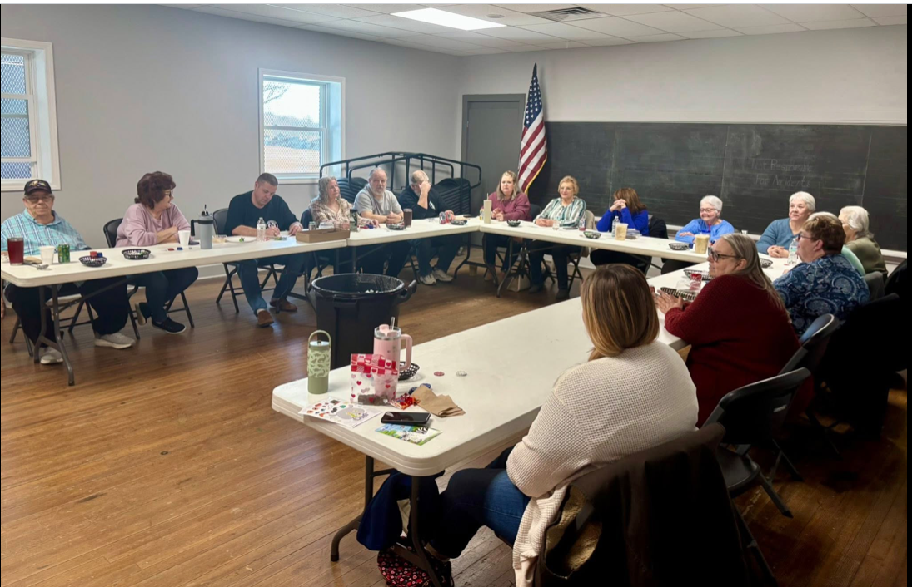

Come out and enjoy our special community lowball tournament at Byron Memorial Park.
gambling, free food, and great commpany.
If you have nay questions reach out to Brad Kegarise at 301-331-6478.
For more information visit our
Facebook.